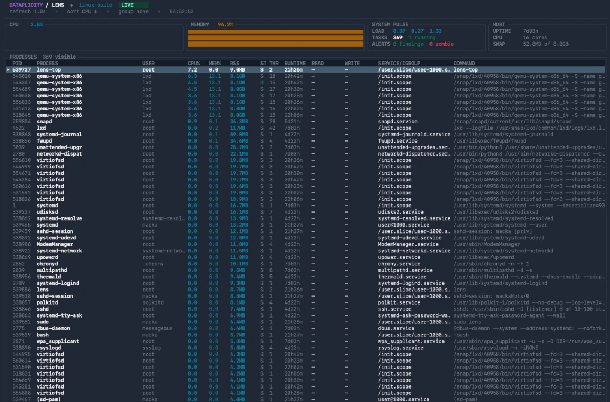

Pick your package. Get to work.
Debian and RPM packages, plus GNU and musl archives. Builds for x86-64, ARM64 and armhf.
Download a releaseOn Debian / Raspberry Pi OS, download the matching .deb, then install it with apt. Full install guide →
FREE & OPEN SOURCE / APACHE 2.0
Less command hopping.
More understanding.
Processes, services, containers, logs and the connections between them. One terminal toolkit for the machine in front of you.
Linux · macOS · Raspberry Pi

Small toolkit. Wide view.
THE TOOLKIT
You already have the system tools.
Lens brings their information together, with shared context and a consistent way to explore it.
lensA host cockpit for an overview of your machine. Open a specialist when something needs a closer look.
YOUR STARTING POINTlens-topLive CPU, memory and I/O. Search, filter, group and inspect the processes behind the numbers.
lens-servicessystemd and launchd service state, restart loops and related processes.
lens-containersDocker, Podman, nerdctl and local LXD inventory, with live performance charts and guarded actions.
lens-logsRecent journal, macOS unified log and local file messages. Narrow by service, process or severity.
lens-healthHealth findings with evidence and suggested follow-ups. Unavailable data stays visible.
lens-disk Storage ↗lens-net Networking ↗lens-hardware Hardware ↗lens-system System context ↗Available data depends on your OS, permissions and installed facilities. Check platform support →
FROM “WHAT’S THAT?” TO “THERE IT IS.”
Move from a noisy process to its service, recent logs and network listeners. Lens keeps process and service identities connected so each view helps explain the next.
Read the operations guideInspect first. Act deliberately.
Process signals and service or container actions use an explicit plan, confirmation and result flow. Your system’s permissions still apply.
$ lens-top$ lens-logs --since "1 hour ago" \
--severity error$ lens-health --jsonInteractive TUI → Plain text → JSON / JSONL
Explore commands, output and exit codesYOURS TO USE
Free to use, inspect and build on.
No Dataplicity account required.
Just you and your terminal.
Debian and RPM packages, plus GNU and musl archives. Builds for x86-64, ARM64 and armhf.
Download a releaseOn Debian / Raspberry Pi OS, download the matching .deb, then install it with apt. Full install guide →
Native packages for Apple Silicon and Intel. No local Rust build needed.
brew tap wildfoundry/tap
brew trust --formula wildfoundry/tap/dataplicity-lens
brew install wildfoundry/tap/dataplicity-lens
lensPrefer to build it yourself? Build from source ↗ · Already installed? Run lens to open the cockpit.
We’re WildFoundry, the team behind Dataplicity. We spend our days building and supporting Linux systems, including Raspberry Pi and gateway fleets. Lens grew out of that work.
We use it ourselves. We’re giving it away because a clearer view of your machine should be easy to get. Lens works independently of Dataplicity, and the source is yours to explore under Apache 2.0.
Take a look. Try it. Make it better.Less digging. More doing.
Get Lens.